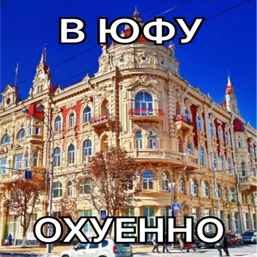

<!doctype html>
<html lang="ru">
<head>
<meta charset="utf-8">
<meta name="viewport" content="width=device-width, initial-scale=1, viewport-fit=cover">
<title>Ты идёшь на посвят?</title>
<meta name="claude:viewport-fit-sides" content="cover">
<style>
  /* Как телевикторина: чёрный экран, вопрос сверху по центру, ниже ответы.
     Картинки-мемы на весь экран с надписью над фото. */
  :root {
    --bg: #000;
    --ink: #fff;
    --muted: #9a9aa6;
    --btn: #15151c;
    --btn-edge: #3a3a48;
    --font: Arial, Helvetica, system-ui, sans-serif;
    color-scheme: dark;
  }
  [hidden] { display: none !important; }
  html, body { height: 100%; margin: 0; }
  html { -webkit-text-size-adjust: 100%; text-size-adjust: 100%; }
  body {
    background: var(--bg);
    color: var(--ink);
    font-family: var(--font);
    overflow: hidden;
  }
  .screen {
    box-sizing: border-box;
    height: 100%;
    overflow-y: auto;
    display: flex;
    flex-direction: column;
    align-items: center;
    padding-block: clamp(32px, 14vh, 160px) 24px;
    padding-left: max(16px, env(safe-area-inset-left, 0px));
    padding-right: max(16px, env(safe-area-inset-right, 0px));
    gap: clamp(28px, 6vh, 48px);
    text-align: center;
  }
  .question {
    margin: 0;
    font-size: clamp(28px, 7vw, 64px);
    font-weight: 700;
    line-height: 1.15;
    text-wrap: balance;
    overflow-wrap: break-word;
    max-width: 18ch;
  }
  .answers {
    display: flex;
    flex-wrap: wrap;
    gap: clamp(16px, 5vw, 48px);
    width: 100%;
    max-width: 860px;
    justify-content: center;
  }
  .answer {
    flex: 1 1 200px;
    max-width: 280px;
    min-width: 0;
    font-family: var(--font);
    font-size: clamp(20px, 5vw, 28px);
    font-weight: 700;
    line-height: 1.2;
    color: var(--ink);
    background: var(--btn);
    border: 2px solid var(--btn-edge);
    border-radius: 14px;
    padding: 0.8em 0.6em;
    cursor: pointer;
    touch-action: manipulation;
    -webkit-tap-highlight-color: transparent;
    transition: transform 0.12s ease, border-color 0.2s ease;
  }
  .answers-2 .answer { flex: 1 1 0; max-width: 260px; }
  .answer:hover { border-color: var(--ink); }
  .answer:active { transform: scale(0.96); }
  .answer:focus-visible { outline: 3px solid var(--ink); outline-offset: 4px; }

  .meme { padding-block: max(24px, env(safe-area-inset-top, 0px)) max(24px, env(safe-area-inset-bottom, 0px)); gap: 20px; justify-content: center; }
  .meme-text {
    margin: 0;
    flex: none;
    font-size: clamp(24px, 7vw, 56px);
    font-weight: 900;
    line-height: 1.15;
    text-wrap: balance;
    overflow-wrap: break-word;
    max-width: 20ch;
  }
  .meme-photo {
    display: block;
    flex: none;
    width: min(100%, 520px, 58vh);
    width: min(100%, 520px, 58dvh);
    height: auto;
    aspect-ratio: 1 / 1;
    object-fit: cover;
    border-radius: 16px;
  }
</style>

<section class="screen" id="q1">
  <h1 class="question">Ты идёшь на посвят?</h1>
  <div class="answers answers-2">
    <button class="answer" id="q1-yes" type="button">Да</button>
    <button class="answer" id="q1-no" type="button">Нет</button>
  </div>
</section>

<section class="screen meme" id="dog" hidden>
  <p class="meme-text">Ты идёшь на посвят</p>
  
</section>

<section class="screen" id="q2" hidden>
  <h1 class="question">Почему ты туда идёшь?</h1>
  <div class="answers">
    <button class="answer" id="why-drink" type="button">Чтоб плотно нахуяриться</button>
    <button class="answer why-other" type="button">Чтоб расслабиться</button>
    <button class="answer why-other" type="button">Потому что интересно</button>
  </div>
</section>

<section class="screen meme" id="final" hidden>
  <p class="meme-text">Ты идёшь плотно нахуяриться, а я вот нет</p>
  
</section>

<script>
(() => {
  const $ = (id) => document.getElementById(id);

  // На iPhone звук не глушится бесшумным режимом (новые iOS)
  try { if (navigator.audioSession) navigator.audioSession.type = "playback"; } catch (e) {}

  // Звук собаки. Телефоны дают играть звук только после касания,
  // поэтому при первом касании «разблокируем» его тихим запуском и паузой.
  const dogSound = new Audio("sound.mp3");
  dogSound.preload = "auto";
  dogSound.setAttribute("playsinline", "");
  let unlocked = false;
  function unlock() {
    if (unlocked) return;
    unlocked = true;
    dogSound.muted = true;
    const p = dogSound.play();
    const reset = () => { dogSound.pause(); dogSound.currentTime = 0; dogSound.muted = false; };
    if (p && p.then) p.then(reset, () => { dogSound.muted = false; unlocked = false; });
    else reset();
  }
  document.addEventListener("pointerdown", unlock, { capture: true });
  document.addEventListener("touchend", unlock, { capture: true });

  function playDog() {
    dogSound.muted = false;
    dogSound.currentTime = 0;
    const p = dogSound.play();
    if (p && p.catch) p.catch(() => {});
  }

  // Звуки викторины, синтезируются прямо в странице
  let audio = null;
  function ctx() {
    if (!audio) {
      const AC = window.AudioContext || window.webkitAudioContext;
      if (!AC) return null;
      audio = new AC();
    }
    if (audio.state === "suspended") audio.resume();
    return audio;
  }
  function tone(ac, { freq, start, dur, type = "sine", gain = 0.25, filter }) {
    const osc = ac.createOscillator();
    const g = ac.createGain();
    osc.type = type;
    osc.frequency.setValueAtTime(freq, start);
    g.gain.setValueAtTime(0.0001, start);
    g.gain.exponentialRampToValueAtTime(gain, start + 0.015);
    g.gain.setValueAtTime(gain, start + dur * 0.7);
    g.gain.exponentialRampToValueAtTime(0.0001, start + dur);
    let node = osc;
    if (filter) {
      const f = ac.createBiquadFilter();
      f.type = "lowpass";
      f.frequency.value = filter;
      osc.connect(f);
      node = f;
    }
    node.connect(g).connect(ac.destination);
    osc.start(start);
    osc.stop(start + dur + 0.05);
  }
  // правильный ответ: звонкое «дзынь-дзынь» вверх
  function playRight() {
    const ac = ctx(); if (!ac) return;
    const t = ac.currentTime + 0.02;
    [1046.5, 1318.5, 1568, 2093].forEach((f, i) => {
      const last = i === 3;
      tone(ac, { freq: f, start: t + i * 0.09, dur: last ? 0.7 : 0.16, type: "triangle", gain: 0.22 });
      tone(ac, { freq: f * 2, start: t + i * 0.09, dur: last ? 0.5 : 0.12, type: "sine", gain: 0.06 });
    });
  }
  // неправильный ответ: низкий гудок «э-э-э»
  function playWrong() {
    const ac = ctx(); if (!ac) return;
    const t = ac.currentTime + 0.02;
    tone(ac, { freq: 233, start: t, dur: 0.38, type: "sawtooth", gain: 0.22, filter: 1400 });
    tone(ac, { freq: 175, start: t + 0.4, dur: 0.8, type: "sawtooth", gain: 0.22, filter: 1400 });
    tone(ac, { freq: 116, start: t + 0.4, dur: 0.8, type: "square", gain: 0.08, filter: 600 });
  }

  function show(id) {
    ["q1", "dog", "q2", "final"].forEach((s) => { $(s).hidden = s !== id; });
  }

  // пока идёт переход, повторные нажатия не считаются
  let busy = false;
  function step(fn, delay) {
    if (busy) return;
    busy = true;
    setTimeout(() => { busy = false; fn(); }, delay);
  }

  // «Нет»: гудок, потом собака со звуком, через 3 секунды — снова вопрос
  $("q1-no").addEventListener("click", () => {
    if (busy) return;
    playWrong();
    step(() => {
      show("dog");
      playDog();
      busy = true;
      setTimeout(() => { dogSound.pause(); busy = false; show("q1"); }, 3000);
    }, 1250);
  });

  // «Да»: правильный ответ, дальше второй вопрос
  $("q1-yes").addEventListener("click", () => {
    if (busy) return;
    playRight();
    step(() => show("q2"), 900);
  });

  // «Чтоб плотно нахуяриться»: правильный ответ, потом финал
  $("why-drink").addEventListener("click", () => {
    if (busy) return;
    playRight();
    step(() => show("final"), 900);
  });

  // остальные ответы: финал со звуком собаки
  document.querySelectorAll(".why-other").forEach((b) => b.addEventListener("click", () => {
    if (busy) return;
    show("final");
    playDog();
  }));
})();
</script>
</html>
